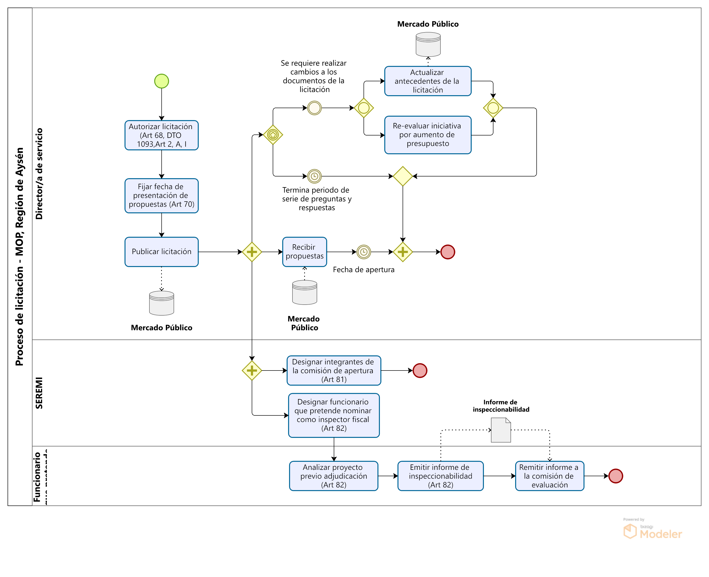

Fase de licitación y adjudicación de contratos de obra pública
Fecha de publicación:

La fase de licitación y adjudicación de contratos de obra pública, toma como entrada el programa base de las iniciativas de inversión a desarrollar durante el año prsupuestario vigente, establecido por el Programa Público de Inversiones Regionales (PROPIR) aprobado por el Congreso Nacional en el mes de diciembre del año previo durante la aprobación de la Ley de Presupuestos.
Para la adjudicación de cada iniciativa contemplada en el PROPIR, se realiza un proceso de licitación, procedimiento que consiste en la solicitud de cotizaciones de proponentes inscritos en el Registro General de Contratistas, para la posterior ejecución de la obra.
Previo a la licitación, las Direcciones deben preparar los antecedentes relacionados a la ejecución de la obra y otros elementos que formaran parte del contrato una vez adjudicado. Estos antecedentes conformaran las bases de la licitacion a presentar a los proponentes una vez hecha su publicación en el Mercado Público. Además, se deben hacer las gestiones para la solicitud y recepción del Decreto Supremo que establece y autoriza la cantidad de fondos a utilizar en la ejecución del contrato.
Teniendo listo los documentos de la licitación y la recepción del Decreto Supremo, la Dirección puede prosiguir con la publicación de las bases o documentos de la licitación en la plataforma de Mercado Público. Aquellas empresas contratistas registradas en el Registro General de Contratistas, podrán visualizar y postular para la adjudicación del contrato, por medio de la presentación de su propuesta, conformada por una propuesta técnica y económica. Ante el escenario que la licitacion no reciba ninguna propuesta, esta se declara desierta, habilitando a la Dirección a realizar una licitación privada, reformular las bases para volver a realizar la publicación o postergarla.
Llegada la fecha de apertura, se procede con la evaluación de todas las propuestas recibidas, teniendo por objetivo la selección de aquella que sea la mas conveniente para el Fisco. Sin embargo, la autoridad que adjudica, tiene la facultad de rechazar todas las propuestas presentadas, siempre y cuando esta sea debidamente fundamentada. Además, la resolución que da constancia de la adjudicación del contrato, debe resolverse dentro de los 60 días siguientes a la fecha de apertura, en caso contrario, los proponentes estaran habilitados de hacer retiro de sus propuestas. Para evitar el retiro, la Dirección puede entablar conversaciones con los proponentes, en donde se deje constancia que el proponente no hará retiro de su propuesta, quedando este a la espera de los resultados de la evaluación.
Preparar antecedentes de licitación

Publicar licitación
Evaluar propuestas

Evaluación técnica
Evaluación económica